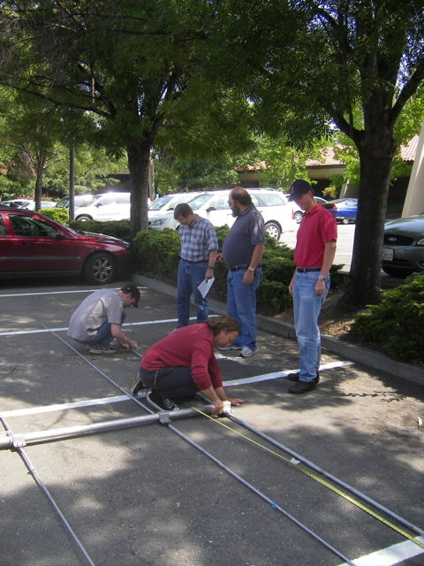
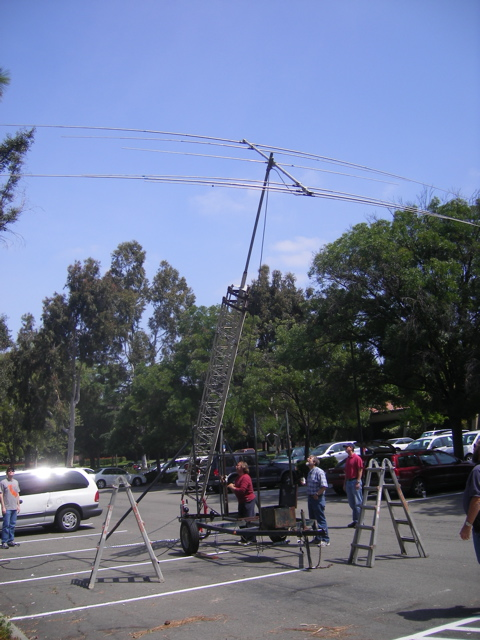
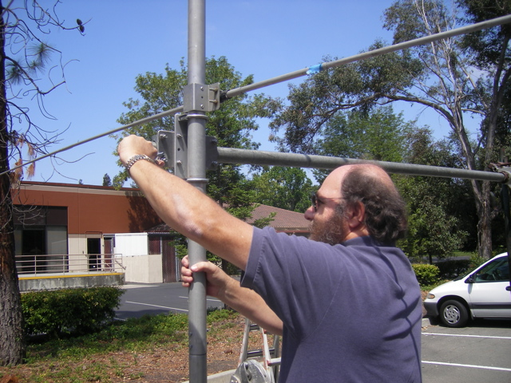

2010 - WVARA Field Day, 25-27 June 2010
Another Awesome Field Day!
Field Day is a great opportunity to get outdoors, gain experience assembling equipment in the rough, and operate a station under challenging band conditions. This year we operated QRP in the 7A Battery from Mora Hill overlooking Los Altos, California, from an elevation of 500 feet.


Scott, AD6RY, and his lovely wife
Kenneth , W6KWF, before and after his all-nighter in the HF/Digital tent.
Here’s a summary of some of 2009 more noteworthy Field Day moments:
The Coolest Technology: Gary (K6KV) brought two homebrew HF triplexers that allowed us to simultaneously share each HF tribander between three stations running on 10- 15- and 20 meters.
The High Point of the Weekend: Svend (KF6EMB) deployed a pair of helium balloon-supported full-wavelength loop antennas on 40 and 80 meters. These antennas are based on WU0I’s award-winning QST article from July 2007, and give new meaning to that old 5th Dimension song from the 1960s: “Up, Up and Away with my Beautiful Balloon.”
The Biggest Grin: Gary (K6KV) got a charge from working W1AW on 80 meters with the balloon loop and 5 watts.
And . . .
The Most Exciting Moment: Jack (W6FB) got a real thrill -- jumping what seemed like 5 feet straight up -- after literally stepping on a large snake in the grass. Both Jack and the snake appeared to be equally surprised by the experience and rapidly departed the scene in opposite directions.
Field Day Prep

Phil Verinsky (W6TQG), Jon Griffiths (W6PI), Greg Olsen (K6XM), Nick
Ulman (KZ2V), Gary Gordon (K6KV) and Greg DesBrisay (N6GD) on Mora
Hill for the final pre-Field Day site visit (June 13). All systems
are go for the big weekend, June 26-28!
Field Day Antenna Map

Field Day is coming, and the WVARA gang is getting prepared. Here area few shots of our team getting the sky hooks tuned and ready for the
big weekend!



